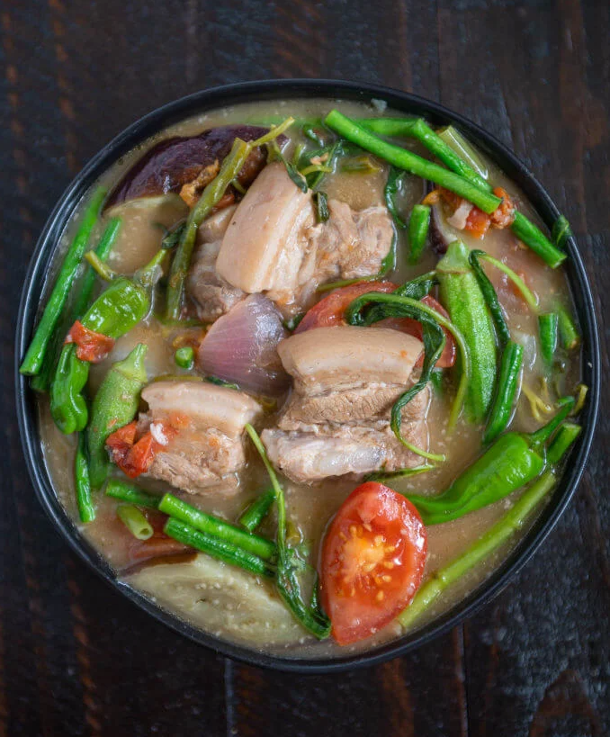

Pork Sinigang
Home

Pork Sinigang (Sinigang na Baboy)
Pork Sinigang (Sinigang na Baboy) is the ultimate Filipino comfort food, famous for its sour, savory broth packed with tender pork and crisp vegetables.
The sourness traditionally comes from tamarind, which perfectly cuts through the richness of the pork fat.
Ingredients:
- 2 lbs (1 kg) Pork Belly or Pork Spareribs – Cut into 2-inch chunks (bone-in cuts yield a richer broth).
- 1 pack (1.5 oz / 40g) Tamarind Base Powder – (Like Knorr Sinigang sa Sampalok mix) or 1 cup fresh tamarind juice.
- 1 medium Red Onion – Quartered.
- 2 medium Tomatoes – Quartered.
- 1 medium Radish (Labanos) – Sliced diagonally into ½-inch thick rounds.
- 1 bundle Long Green Beans (Sitaw) – Cut into 2-inch lengths.
- 1 medium Eggplant (Talong) – Sliced diagonally into ½-inch thick pieces.
- 3-4 pieces Green Long Chili (Siling Haba) – Kept whole for aroma and gentle heat.
- 1 bundle Water Spinach (Kang-kong) – Leaves and tender stems separated.
- 6-8 cups Water – Or rice washing (the water used to rinse raw rice) for a thicker broth body.
- 2 tbsp Fish Sauce (Patis) – To taste.
Step-by-Step Instructions
- Boil and Skim the Meat:
Place the pork, quartered onions, and tomatoes in a large pot. Pour in the water or rice washing. Bring to a boil over high heat. Use a spoon to skim off any gray foam or impurities that rise to the surface to keep the broth clear.
- Simmer until Tender:
Lower the heat to medium-low, cover the pot, and let it simmer for 45 to 60 minutes. The pork should be fork-tender and the tomatoes completely softened and crushed into the broth.
- Season the Broth:
Stir in the tamarind powder mix. Let it simmer for 2 to 3 minutes to blend completely with the pork broth. Taste the soup and add fish sauce (patis) to reach your desired level of savory-salty balance.
- Layer the Vegetables:
Add the vegetables based on their cooking times. Start with the radish (labanos) and green long chilis (siling haba), simmering for 3 minutes. Next, add the long green beans (sitaw) and eggplant (talong), cooking for another 3 minutes until tender but not mushy.
- Finish with Greens:
Add the kangkong stems and leaves. Push them down into the hot broth. Turn off the heat, cover the pot, and let the residual heat cook the greens for 1 to 2 minutes before serving.
Serve piping hot in a deep bowl with a side of white rice and a small dipping saucer of fish sauce with crushed bird's eye chili (siling labuyo).